The previous two pages analyzed LetsPlot's architecture and explored how high-performance rendering (like the xy library) could inform LetsPlot's evolution. This page takes a different approach: we used LetsPlot itself to generate 12 charts across 6 different chart types, exercising the full API surface — ggplot(), aes(), geom_hex(), geom_pointdensity(), ggmarginal(), gggrid(), sampling_random(), and more.
Below you'll find the actual output, the exact code used, and analysis of what works, what doesn't, and where the library could go next for handling scatter plots at scale.
lets-plot==4.11.0 on Python 3.13, using synthetic datasets (10K–100K points). SVGs exported via ggsave(). The full generation script is included below each chart section.
As you noted: "Для scatter с такими объемами нужен high-performance движок определенно" (Scatter at these volumes definitely needs a high-performance engine). We generated the same 100K-point dataset (two Gaussian clusters) through four different LetsPlot rendering strategies:
| Approach | Geom | Points Rendered | Output Size | Best For |
|---|---|---|---|---|
geom_point + sampling_random(2000) |
Scatter | 2,000 | 423 KB | Quick EDA, <50K pts |
geom_hex(bins=[50,50]) |
Hex bins | 2,500 cells | 183 KB | Density patterns, any size |
geom_bin2d(bins=[60,40]) |
Rect bins | 2,400 cells | 202 KB | Grid-aligned data |
geom_pointdensity() |
Density points | 100,000 | 262 KB (PNG) | Per-point density color |
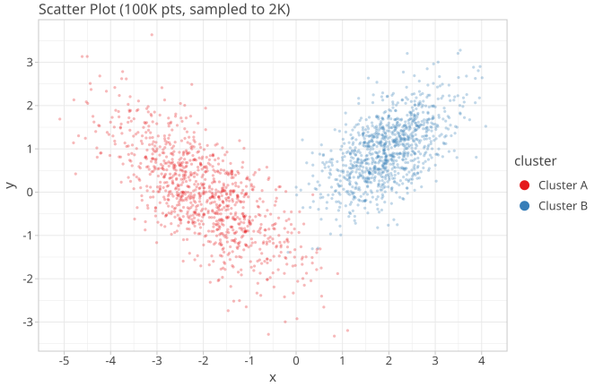
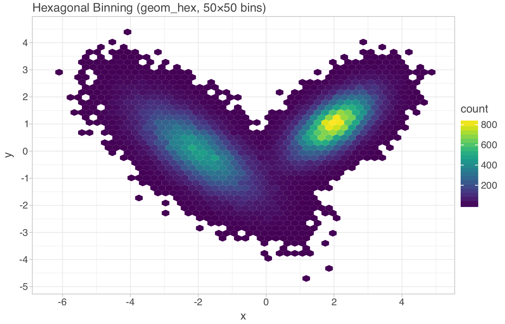
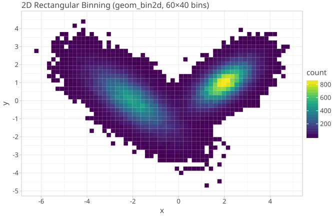
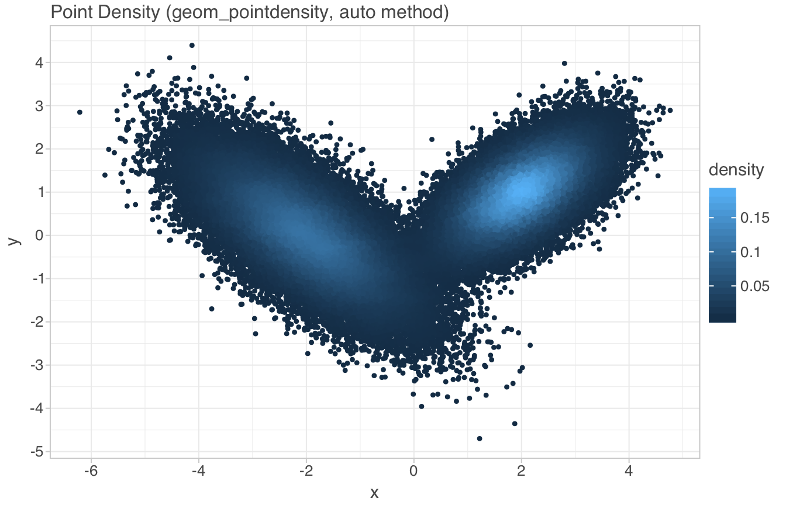
geom_pointdensity() renders all 100K points (no sampling) and colors each by local density. The method='auto' parameter selects between 'neighbours' (count nearby points) and 'kde2d' (kernel density estimate) based on data size. This is the closest LetsPlot currently gets to a "high-performance scatter" — it preserves every point's position while encoding density through color.
The bottleneck: at 100K points, the SVG output is 15 MB (hence the PNG conversion above). The rendering engine processes all points, but the vector output format becomes impractical. This is where a WebGL-backed renderer (like xy's approach) would eliminate both the size and rendering-time bottleneck.
import numpy as np
from lets_plot import *
LetsPlot.set_theme(theme_light())
# 100K points, two Gaussian clusters
n = 100_000
cov0 = [[1, -.7], [-.7, 1]]
cov1 = [[.5, .3], [.3, .5]]
x0, y0 = np.random.multivariate_normal(mean=[-2, 0], cov=cov0, size=n//2).T
x1, y1 = np.random.multivariate_normal(mean=[2, 1], cov=cov1, size=n//2).T
data = {'x': np.concatenate([x0, x1]), 'y': np.concatenate([y0, y1])}
# Approach 1: Sampling (loses data)
ggplot(data, aes(x='x', y='y')) + \
geom_point(size=1.5, alpha=0.3, \
sampling=sampling_random(2000, seed=42))
# Approach 2: Hexagonal binning
ggplot(data, aes(x='x', y='y')) + \
geom_hex(bins=[50, 50]) + scale_fill_viridis()
# Approach 3: 2D rectangular binning
ggplot(data, aes(x='x', y='y')) + \
geom_bin2d(bins=[60, 40]) + scale_fill_viridis()
# Approach 4: Density-colored points (all 100K rendered)
ggplot(data, aes(x='x', y='y')) + \
geom_pointdensity(method='auto', size=2) + scale_fill_viridis()Unlike ggplot2, LetsPlot has native support for marginal plots via ggmarginal(). This wraps a scatter plot with distribution summaries (density, histogram, boxplot) on the axes — a single call that replaces what would be a gggrid layout in ggplot2.
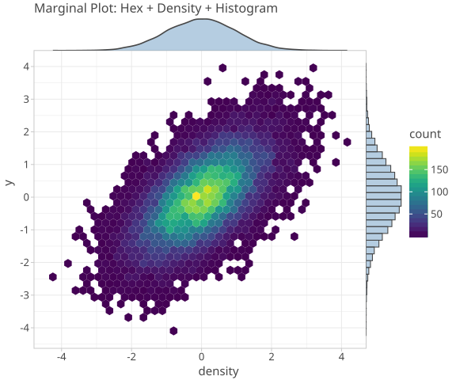
n2 = 20_000
x2, y2 = np.random.multivariate_normal(mean=[0, 0], \
cov=[[1, .6], [.6, 1]], size=n2).T
data = {'x': x2, 'y': y2}
ggplot(data, aes(x='x', y='y')) + \
geom_hex(bins=[40, 40]) + \
scale_fill_viridis() + \
ggmarginal(sides='t', layer=geom_density(fill='steelblue', alpha=0.4)) + \
ggmarginal(sides='r', layer=geom_histogram(fill='steelblue', alpha=0.4, bins=40))ggmarginal() API is powerful but could benefit from a convenience wrapper like ggmarginal_auto() that adds standard density/histogram margins with one call. Currently requires two separate ggmarginal() calls for top+right margins.
gggrid() provides a matplotlib subplots()-like API with shared axes, guide collection, and flexible layouts. We generated a 2×2 grid showing four categories (15K pts each, 60K total) with hex binning and shared color scale:
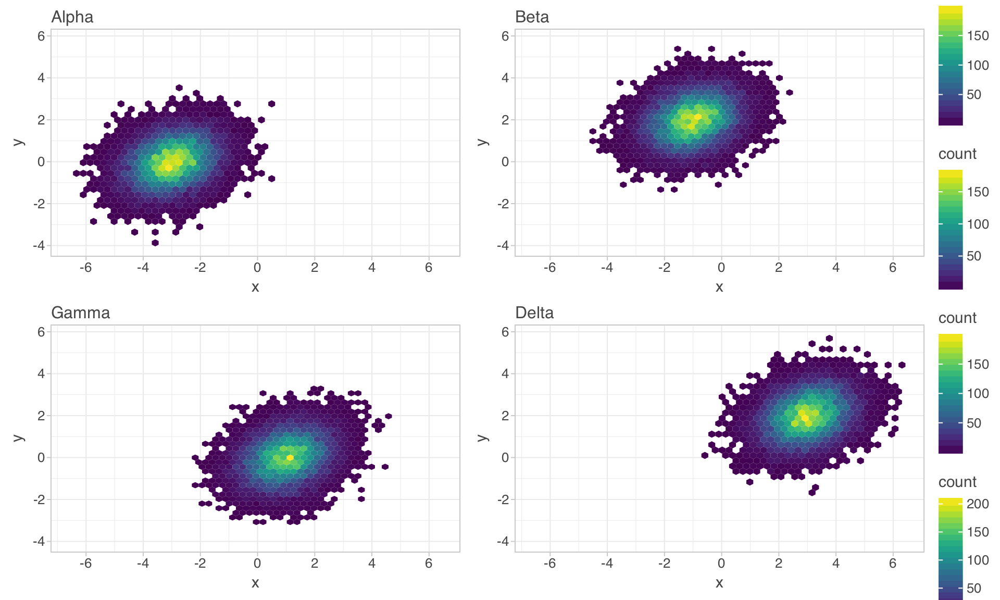
categories = ['Alpha', 'Beta', 'Gamma', 'Delta']
plots = []
for cat in categories:
sub = data[data['cat'] == cat]
plots.append(
ggplot(sub, aes(x='x', y='y')) +
geom_hex(bins=[30, 30]) +
scale_fill_viridis() +
ggtitle(cat)
)
gggrid(plots, ncol=2, sharex='all', sharey='all', guides='collect')"С другой стороны, в exploratory data analysis скаттер это только один тул. Множество других графиков (гистограмма например), показывают результат той или иной статистической ф-ии. Тут ggplot хорош."
— LetsPlot creator, on the strength of ggplot for statistical EDA
Statistical charts (histograms, boxplots, density plots) are inherently aggregated. A histogram with 80 bins reduces 50K observations to 80 bars. A boxplot reduces them to 5 summary statistics per group. The rendering cost is O(bins) or O(groups), not O(N). This is why ggplot2-style libraries excel at EDA — the statistical transformation happens before rendering, naturally controlling output size.
We generated three statistical chart types from the same 50K-point dataset (three groups: exponential, normal, uniform):
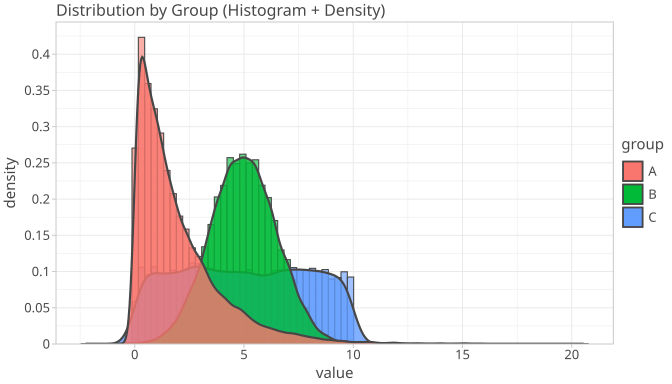
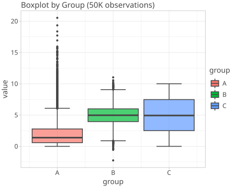
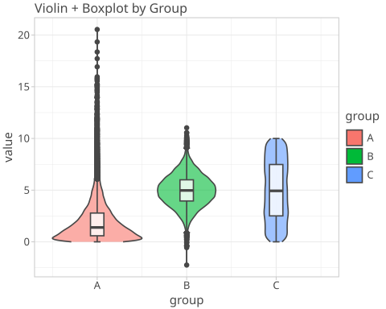
groups = np.random.choice(['A', 'B', 'C'], 50_000, p=[0.5, 0.3, 0.2])
values = np.where(groups == 'A', np.random.exponential(2, 50_000),
np.where(groups == 'B', np.random.normal(5, 1.5, 50_000),
np.random.uniform(0, 10, 50_000)))
data = {'group': groups, 'value': values}
# Histogram + density overlay
ggplot(data, aes(x='value', fill='group')) + \
geom_histogram(aes(y='..density..'), bins=80, alpha=0.6, position='identity') + \
geom_density(alpha=0.8, size=1)
# Boxplot
ggplot(data, aes(x='group', y='value', fill='group')) + \
geom_boxplot(alpha=0.7, outlier_size=0.5)
# Violin + boxplot
ggplot(data, aes(x='group', y='value', fill='group')) + \
geom_violin(alpha=0.6, scale='area') + \
geom_boxplot(width=0.15, alpha=0.8, fill='white')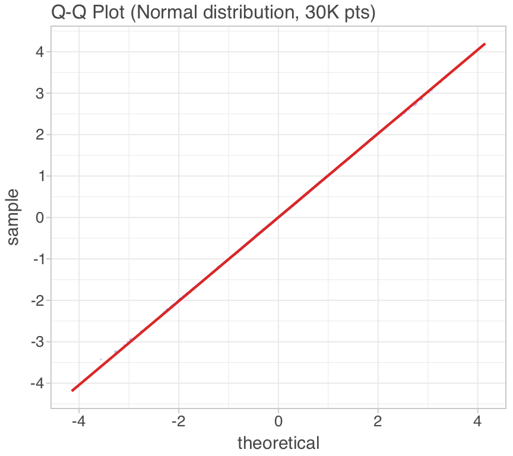
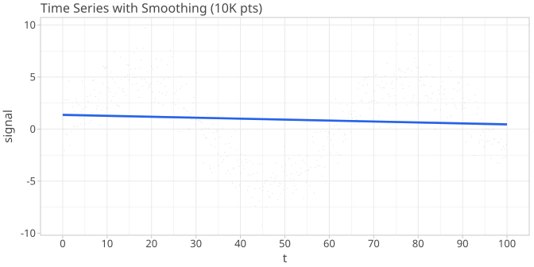
# QQ Plot
ggplot({'normal': np.random.normal(0, 1, 30_000)}, aes(sample='normal')) + \
geom_qq(color='#2563eb', alpha=0.3, size=0.8, \
sampling=sampling_random(3000, 42)) + \
geom_qq_line(color='#dc2626', size=1)
# Time Series with smoothing
t = np.linspace(0, 100, 10_000)
signal = np.sin(t / 10) * 5 + np.random.normal(0, 1.5, 10_000)
ggplot({'t': t, 'signal': signal}, aes(x='t', y='signal')) + \
geom_point(size=0.5, alpha=0.2, sampling=sampling_systematic(500)) + \
geom_smooth(color='#2563eb', size=1.2, se=True, alpha=0.15)| Feature | Observation | Verdict |
|---|---|---|
geom_pointdensity() | Auto-selects neighbours vs KDE based on N. Preserves all points. | Strong |
ggmarginal() | Unique differentiator vs ggplot2. Clean API for marginal distributions. | Strong |
gggrid() | Share axes, collect guides, flexible layouts. Matches matplotlib subplots. | Strong |
sampling_* | 8 sampling strategies (random, stratified, systematic, vertex, etc). Well-designed. | Strong |
geom_hex() | Hexagonal binning for large scatter. Configurable bins and binwidth. | Good |
ggsave() | SVG, PNG, HTML, PDF export. Clean API with size/dpi controls. | Good |
| Area | Current Limit | Suggestion |
|---|---|---|
| SVG output size | 100K pts → 15 MB SVG | Auto-switch to PNG or WebGL for N > 50K |
| Scatter rendering | Canvas 2D, O(N) draw calls | WebGL renderer option (like xy's tier system) |
| LOD / zoom | All-or-nothing rendering | Viewport-driven aggregation (hex bins at zoom-out, points at zoom-in) |
| ggmarginal() convenience | Two calls for top+right | ggmarginal_auto() wrapper |
| Interactive HTML | Static SVG in notebooks | Optional WebGL-backed interactive HTML output |
Your insight was: scatter at scale needs a high-performance engine, but statistical charts are already fine because they're aggregated. The bridge between these two worlds is the concept of viewport-driven statistical transformation:
geom_hex() bins the entire dataset into fixed bins, then renders all binsstat_viewport_hex() that bins only the visible viewport, adapting bin resolution to zoom level — this is what xy's tier ladder does, but expressed as a ggplot stat_* functiongeom_point(stat='viewport_hex', bins='auto') + geom_smooth() — the same grammar, but with a viewport-aware statThis keeps the Grammar of Graphics paradigm intact while adding the performance characteristics of a WebGL engine. The stat layer becomes the "transparent render tier" from the xy architecture.
#!/usr/bin/env python3
"""Generate 12 charts with LetsPlot — full script."""
import numpy as np
from lets_plot import *
LetsPlot.set_theme(theme_light())
np.random.seed(42)
# === 100K scatter, 4 approaches ===
n = 100_000
cov0 = [[1, -.7], [-.7, 1]]
cov1 = [[.5, .3], [.3, .5]]
x0, y0 = np.random.multivariate_normal(mean=[-2, 0], cov=cov0, size=n//2).T
x1, y1 = np.random.multivariate_normal(mean=[2, 1], cov=cov1, size=n//2).T
data = {'x': np.concatenate([x0, x1]), 'y': np.concatenate([y0, y1])}
# (1) Sampled scatter
ggsave(ggplot(data, aes(x='x', y='y')) +
geom_point(size=1.5, alpha=0.3, sampling=sampling_random(2000, 42)),
'scatter_sampled.svg', w=7, h=4.5, unit='in')
# (2) Hex bin
ggsave(ggplot(data, aes(x='x', y='y')) +
geom_hex(bins=[50, 50]) + scale_fill_viridis(),
'hex_bin.svg', w=7, h=4.5, unit='in')
# (3) 2D bin
ggsave(ggplot(data, aes(x='x', y='y')) +
geom_bin2d(bins=[60, 40]) + scale_fill_viridis(),
'bin2d.svg', w=7, h=4.5, unit='in')
# (4) Point density (all 100K)
ggsave(ggplot(data, aes(x='x', y='y')) +
geom_pointdensity(method='auto', size=2) + scale_fill_viridis(),
'pointdensity.svg', w=7, h=4.5, unit='in')
# === Marginal plot (20K pts) ===
x2, y2 = np.random.multivariate_normal([0, 0], [[1, .6], [.6, 1]], 20_000).T
ggsave(ggplot({'x': x2, 'y': y2}, aes(x='x', y='y')) +
geom_hex(bins=[40, 40]) + scale_fill_viridis() +
ggmarginal(sides='t', layer=geom_density(fill='steelblue', alpha=0.4)) +
ggmarginal(sides='r', layer=geom_histogram(fill='steelblue', alpha=0.4, bins=40)),
'marginal.svg', w=6, h=5, unit='in')
# === gggrid multi-panel (60K total) ===
# [See page for full code]
# === Statistical charts (50K pts) ===
# [See page for full code]
# === QQ plot + Time series ===
# [See page for full code]geom_pointdensity() is the best current option for large scatter — renders all points, density-colored, auto-selects algorithmgeom_hex() and geom_bin2d() are the pragmatic choice when you need small output files and fast renderingggmarginal() is a unique differentiator — no direct ggplot2 equivalentgggrid() with guides='collect' provides clean multi-panel layoutssampling_*) is well-designed with 8 strategies| Path | Effort | Impact | Description |
|---|---|---|---|
| WebGL output mode | High | Transformative | Optional WebGL renderer for interactive HTML output. Handles 10M+ points with viewport-driven LOD. |
| Viewport-aware stats | Medium | Strong | stat_viewport_hex() — bins only visible area, adapts to zoom. Bridges ggplot grammar with high-performance rendering. |
| Auto-format selection | Low | Practical | Auto-switch from SVG to PNG/WebGL when N exceeds threshold. Zero API change, immediate benefit. |